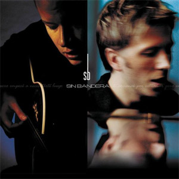
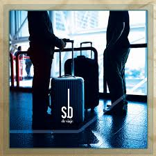

 
****SIN BANDERA**** Nombre del albúm debut homónimo grabado por el dúo musical Sin Bandera. Fue lanzado el 26 de Marzo de 2002
****DE VIAJE**** Segundo albúm de estudio grabado por el dúo, lanzado el 21 de Octubre de 2003.
****MAÑANA**** Tercer albúm, lanzado el 22 de Noviembre de 2005.
****PASADO**** Cuarto albúm de estudio grabado por el dúo, lanzado el 21 de Octubre de 2006.
****UNA ÚLTIMA VEZ**** Quinto albúm y primer extended play lanzado por el dúo en 2016, luego de estar casi 8 años fuera de los estudios.